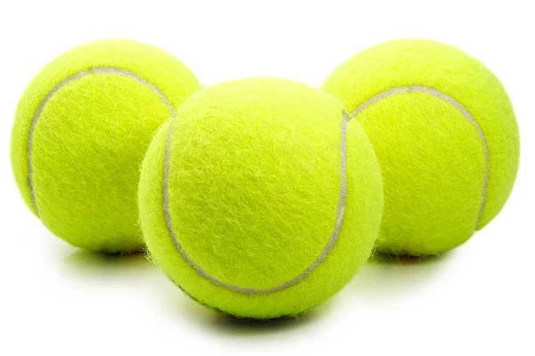

Tennis World Home Page
Welcome to the World of Tennis
Tennis is a dynamic and exciting sport that has captured the hearts of millions around the globe. On our website, you will find everything you need to know about the history of the game, key rules, and modern tournaments.
